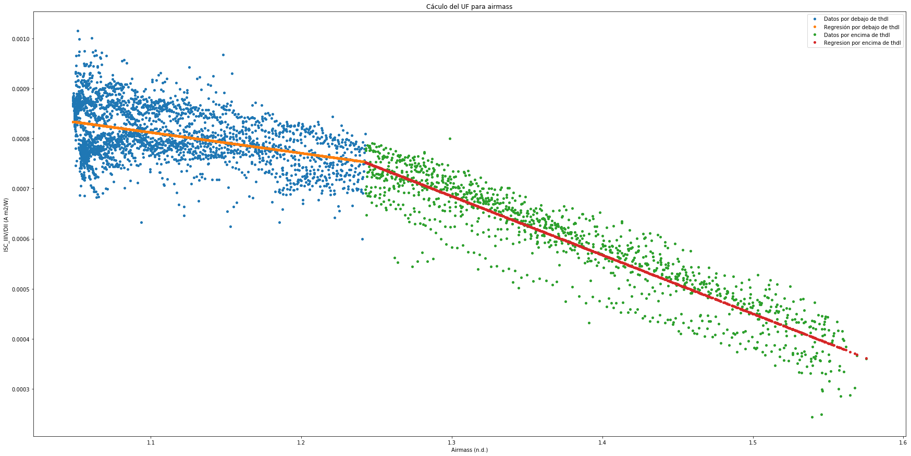
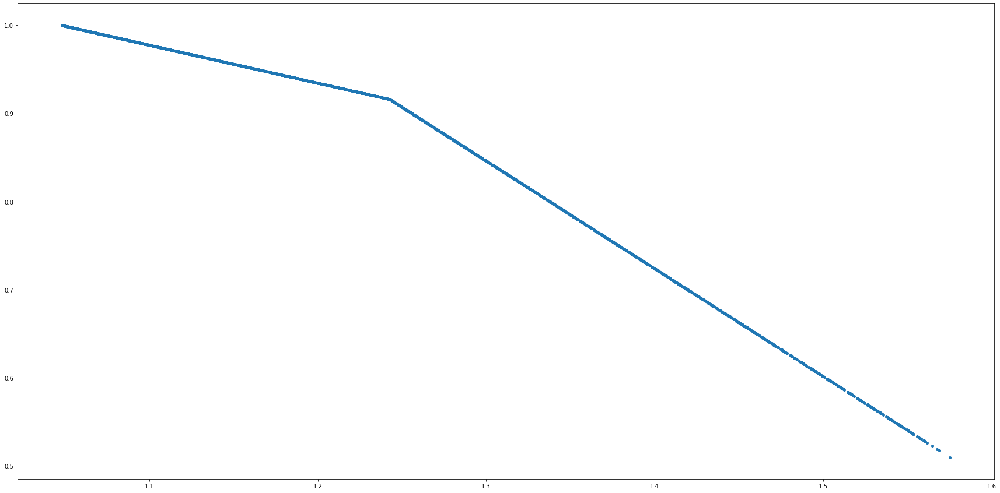
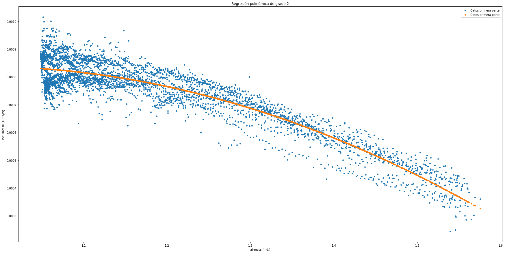
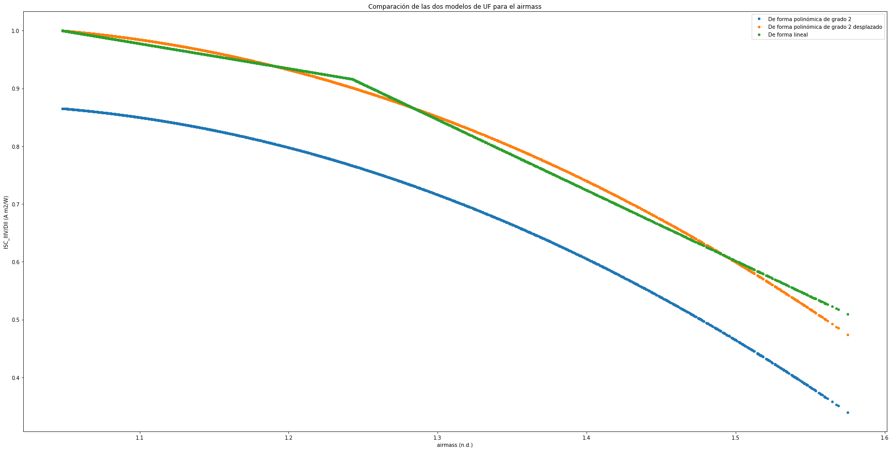

In [37]: runfile('C:/Users/juanj/OneDrive/Escritorio/repositorio_tfg/Calcular_UF.py', wdir='C:/Users/juanj/OneDrive/Escritorio/repositorio_tfg')
Reloaded modules: Error
El coeficiente de determinación para los datos por debajo de AOILIMIT es de: 0.0009065558374620197
El coeficiente de determinación por debajo de thdl : 0.16322254866341257
El coeficiente de determinación por encima de thdl : 0.8636075106267574
El coeficiente de determinación total : 0.8540025403043598
El coeficiente de determinación es de: 0.8549227924488301





In [38]: